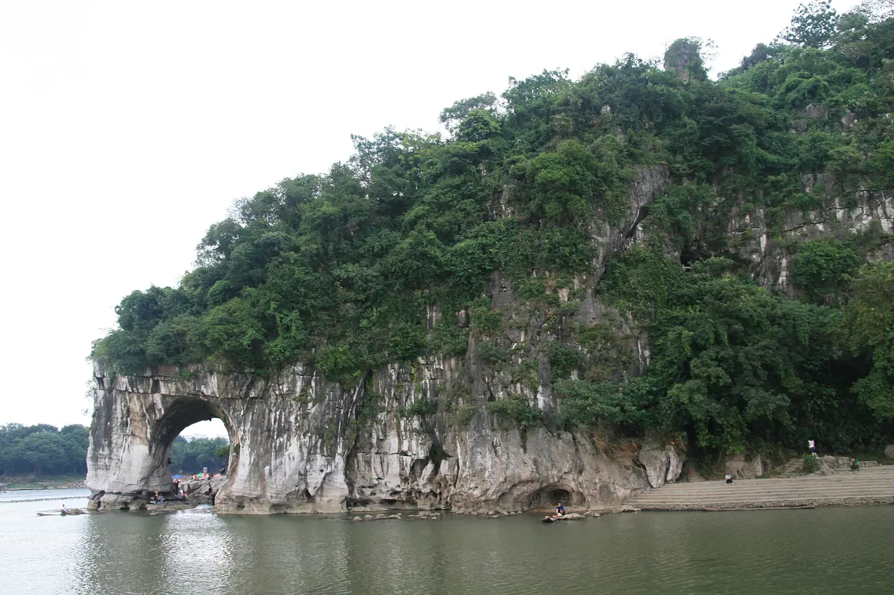

GUANGXI, CHINA · 25° N / 110° E
一江碧水，万重青山
遇见
桂林山水
Where Mountains Meet Water
沿着漓江，走进一幅会呼吸的山水长卷。
看见自然的雕琢，也读懂山水的诗意。
林
山，是时间的形状。
水，是风景的笔触。
从地貌到意境，从看见到创作。
用四种方式，认识桂林山水。
01 / EXPLORE THE LANDSCAPE
循着水，遇见山
江流转弯，风景也随之展开。
点击路线标记，靠近真实的桂林景点。

实景探索 · 循江发现三处风景02 / DISCOVER THE SCIENCE
水，怎样塑造山石？
看似柔软的水，在漫长时间里，
留下山峰、洞穴与河谷。
水从空气和土壤中吸收二氧化碳，呈弱酸性，沿裂隙缓慢溶解石灰岩。
百分比表示动画进度，不对应年代。地表与地下视图是互补的过程示意，非同一地点的精确复原。峰丛与峰林可以共存；实际演化还受岩性、构造、水位与地表河流影响。
动画的科学依据与阅读资料
USGS 说明，含二氧化碳的水沿节理、裂隙和层面渗流，溶蚀可扩大通道。UNESCO 对桂林的介绍强调河流作用，以及峰丛与峰林的大范围共存。本动画据此分开呈现地表排水与地下通道，不把两类地貌机械排列成必经阶段。
USGS · Karst Topography ↗UNESCO · South China Karst ↗FOLLOW A DROP
为一滴水，找到地下的路
从左上方的水滴出发，点击相邻裂隙节点，或拖动水滴沿裂隙前进，连通右下方的出口。点上一节点可以退回。
裂隙网络为简化操作模型；通道扩大的动画压缩了漫长时间，不表示一滴水能立即形成洞穴。
03 / FEEL THE CULTURE
看见风景，也看见意境
山与水，不只是地理的名字。
它们也是中国艺术中一种观看世界的方式。
同一片山水，两种观看方式 · 艺术示意
MOUNTAINS + WATER = SHANSHUI
把山水，看成一幅画
“山水”字面上是山与水，也指向中国山水画的悠久传统。从眼前的桂林出发，试着感受景物之间的关系：远山与近水，浓墨与空白，宏大的山峰与小小的舟。
远近 · Depth
山色渐淡，层次便在雾中展开。
留白 · Open space
没有画满的地方，也可以是云、水与想象。
GUILIN IN WORDS & PAINTING
诗里有出处，画里有桂林
点击展开原文、英文释义与创作背景。英文为本站释义，非历史译本。
04 / CREATE A MEMORY
把一幅山水，寄给世界
选一种色彩，留一片云雾，写一句心情。
带走一张只属于你的山水明信片。
山水有情，也需要我们的守护。
带走美好的记忆，不留下垃圾。尊重当地生活，让山水的故事继续。
再看一眼桂林 ↑